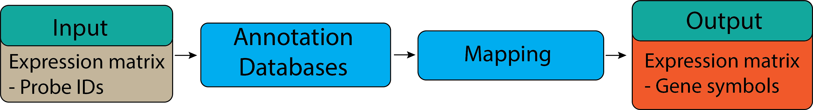

Gene ID mapping
Contents
Gene ID mapping#

Learning Objectives:#
Understanding different probe set ID.
Mapping probe IDs into gene identifiers and symbols.
Understanding different probe set ID#
Gene set or pathway analysis requires that gene sets and expression data use the same type of gene ID
(Entrez Gene ID, Gene symbol or probe set ID etc). However, this is frequently not true for the data we have.
For example, our gene sets mostly use Entrez Gene ID, but microarray datasets are frequently labeled by probe
set ID (or RefSeq transcript ID etc). Therefore, we need to convert or map the probe set IDs to Entrez gene ID.
Here, we will use GSE48350 dataset that we have used in the previous section for demonstration of gene ID mapping.
In order to know what kind of probe set ID, we need to navigate to GEO record page of GSE48350. Under the Platform
tab, we can find the probe ID information.

From the record page, we know that the dataset was generated from 1 platform using Affymetrix Human Genome U133 Plus 2.0 Array.
To convert or map the probe set IDs to Entrez gene ID, we need to find the corresponding annotation package from
Bioconductor. For analyzed data, we need to use the hgu133plus2.db database.
We can install the package using following R command:
suppressMessages({if (!require("BiocManager", quietly = TRUE))
install.packages("BiocManager")
suppressWarnings(BiocManager::install("hgu133plus2.db", update = F))
})
In the previous section, we have successfully downloaded the dataset GSE48350 and saved a sub-set of it to the data sub-directory.
Now we can load the sample dataset and check for the Probe Set ID names by using the following command.
data = readRDS("./data/GSE48350.rds")
probeIDs = rownames(data)
probeIDs
- '1007_s_at'
- '1053_at'
- '117_at'
- '121_at'
- '1255_g_at'
- '1294_at'
- '1316_at'
- '1320_at'
- '1405_i_at'
- '1431_at'
Probe Set ID is the identifier that refers to a set of probe pairs selected to represent expressed sequences on an array. Designations are given at design time.
The probe set names never change, but they can give you an idea of what was known about the sequence at the time of design.
_at = all the probes hit one known transcript.
_a = all probes in the set hit alternate transcripts from the same genes.
_s = all probes in the set hit transcripts from different genes.
_x = some probes hit transcripts from different genes.
For HG-U133, the _a designation was not used; an _s probe set on these arrays means the same as an _a on any of the HG-U133 arrays.
Mapping probe IDs into gene identifiers and symbols.#
For pathway analysis, Probe set IDs should be mapped to Ensembl ID and SYMBOL.
Ensembl ID is a transcript identifier from the ENSEMBL project while SYMBOL is a gene symbol is a short-form abbreviation for a particular gene.
We can load the hgu133plus2.db database to perform Probe ID mapping using the following command:
suppressMessages({library(hgu133plus2.db)})
Here, we can build a lookup table that maps the Probe ID to Ensembl ID and gene symbol using the following command:
suppressMessages({
annotLookup <- select(hgu133plus2.db, keys = probeIDs, columns = c('PROBEID', 'ENSEMBL', 'SYMBOL'))
})
annotLookup
| PROBEID | ENSEMBL | SYMBOL |
|---|---|---|
| <chr> | <chr> | <chr> |
| 1007_s_at | ENSG00000204580 | DDR1 |
| 1007_s_at | ENSG00000223680 | DDR1 |
| 1007_s_at | ENSG00000229767 | DDR1 |
| 1007_s_at | ENSG00000234078 | DDR1 |
| 1007_s_at | ENSG00000215522 | DDR1 |
| 1007_s_at | ENSG00000137332 | DDR1 |
| 1007_s_at | ENSG00000230456 | DDR1 |
| 1053_at | ENSG00000049541 | RFC2 |
| 117_at | ENSG00000173110 | HSPA6 |
| 121_at | ENSG00000125618 | PAX8 |
| 1255_g_at | ENSG00000048545 | GUCA1A |
| 1294_at | ENSG00000182179 | UBA7 |
| 1316_at | ENSG00000126351 | THRA |
| 1320_at | ENSG00000070778 | PTPN21 |
| 1405_i_at | ENSG00000271503 | CCL5 |
| 1405_i_at | ENSG00000274233 | CCL5 |
| 1431_at | ENSG00000130649 | CYP2E1 |
From the lookup table we can spot that a single Probe ID can be mapped to multiple Ensembl IDs. Depending on analysis performed, users can select their own Ensembl ID of interest. Here is a simple way to replace Probe IDs with gene symbols :
rownames(data) <- unique(annotLookup$SYMBOL)
data
| GSM300166 | GSM300167 | GSM300168 | GSM300169 | GSM300170 | GSM300171 | GSM300172 | GSM300173 | GSM300174 | GSM300175 | |
|---|---|---|---|---|---|---|---|---|---|---|
| <dbl> | <dbl> | <dbl> | <dbl> | <dbl> | <dbl> | <dbl> | <dbl> | <dbl> | <dbl> | |
| DDR1 | 0.9168711 | 1.2842289 | 1.3838295 | 1.4620315 | 1.4960686 | 1.2866872 | 1.3716376 | 0.6085351 | 0.8452452 | 0.6745393 |
| RFC2 | 0.7367870 | 0.9152165 | 1.5155498 | 1.0262097 | 1.2758373 | 1.3132664 | 1.1284863 | 0.9081397 | 0.9393891 | 1.0130529 |
| HSPA6 | 0.8950221 | 1.0440652 | 2.0347068 | 1.6976205 | 2.5993895 | 3.8876049 | 1.6831516 | 0.8674964 | 1.4063434 | 0.7850503 |
| PAX8 | 0.9819619 | 1.0361480 | 0.9871635 | 1.1363467 | 1.0282362 | 0.8330552 | 1.0085661 | 1.1053528 | 0.9709147 | 0.9327358 |
| GUCA1A | 0.5765267 | 0.6206102 | 2.0633803 | 1.3301512 | 1.6716562 | 2.1832146 | 1.6839774 | 1.2764652 | 2.5877041 | 1.2204636 |
| UBA7 | 0.8753293 | 0.9479945 | 1.3330627 | 1.3545021 | 1.4012277 | 1.0190251 | 1.7229316 | 0.8337133 | 1.0038313 | 0.9117344 |
| THRA | 1.4066110 | 1.0097321 | 0.6604550 | 0.6860092 | 0.7863153 | 0.5898622 | 0.9050921 | 1.1971904 | 0.8503563 | 0.9668145 |
| PTPN21 | 0.9490653 | 0.8197735 | 0.5816383 | 0.5428258 | 0.4708366 | 0.5567084 | 0.6201315 | 0.8163207 | 1.0518593 | 0.9359782 |
| CCL5 | 1.3552448 | 0.8693293 | 1.4550548 | 1.1130387 | 0.9304383 | 1.0561844 | 1.6140728 | 1.0406454 | 1.1045746 | 0.8406106 |
| CYP2E1 | 1.1783971 | 0.8985217 | 1.9054227 | 1.4497262 | 1.4704667 | 1.5978145 | 1.1633086 | 0.9495343 | 0.9399777 | 1.3396635 |